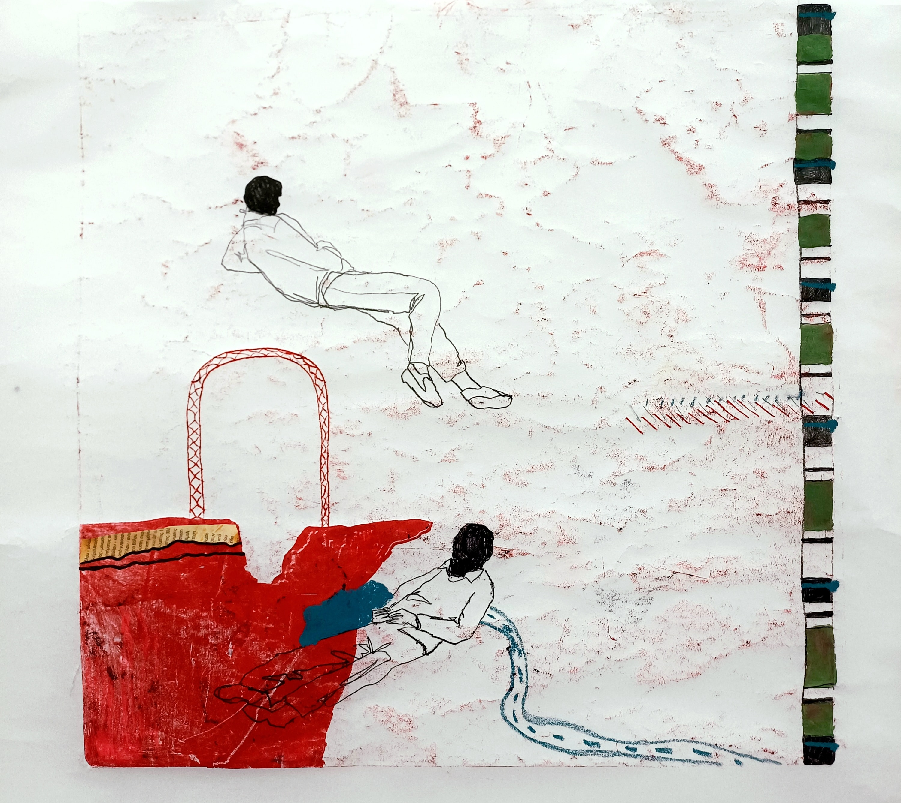

Monotype, 70 x 50 cm
From the monotype series
This is a monotype with oil, acrylic paint, collage and oil pastel inspired by a chapter of the book “Motorcycle Diaries” by Ernesto Che Guevara.
Notes: The artwork is named after a chapter from the book. In it, Ernesto and Alberto made a stop because of the first one got ill..
Σκάμα, 2024

Monotype, 50 x 50 cm
From the monotype series
This is a monotype with acrylic paint, collage and oil pastel inspired by the documentary Mourning Rock/Αγέλαστος πέτρα (2000) by Filippos Koutsaftis. A greek documentary about the Eleusinian mysteries, death and the after life